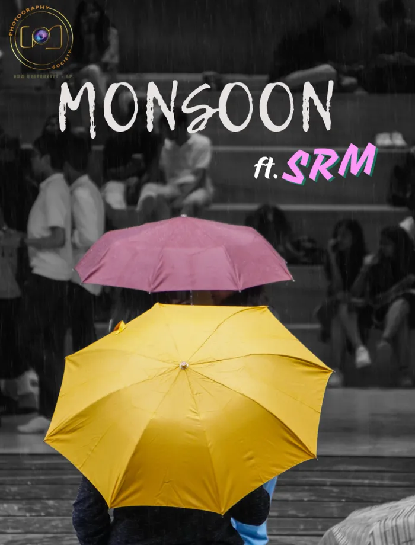
PhotographyRainy Day — SRM AP
Atmospheric moments and campus life captured through the lens.
View photo collection ↗Visual storyteller · SRM AP
I’m Shaik Muneer Irfan — a creative designer, photographer and videographer. I make visual work for events, people and brands, from the first frame to the final edit.
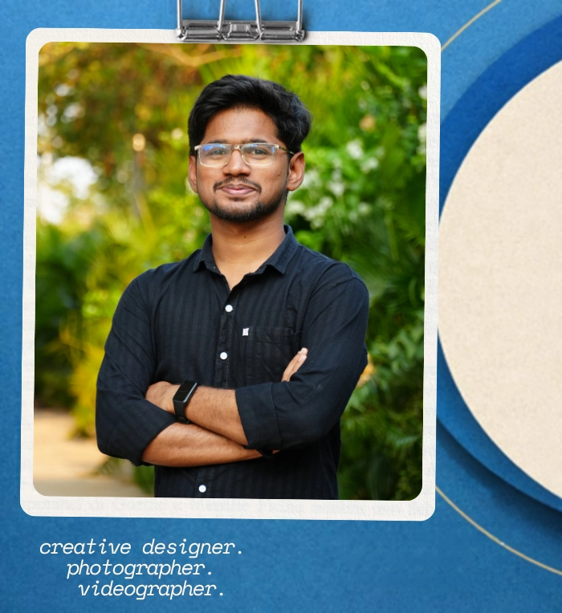
The portfolio
A selection of event photography, short-form video and graphic design. Choose a category to explore.

PhotographyAtmospheric moments and campus life captured through the lens.
View photo collection ↗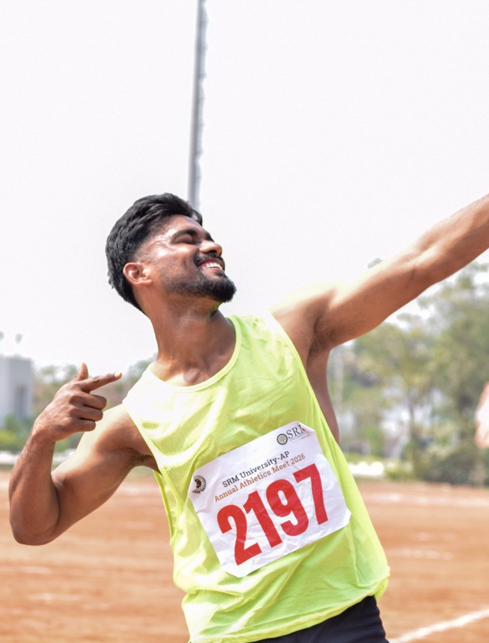
Event coverage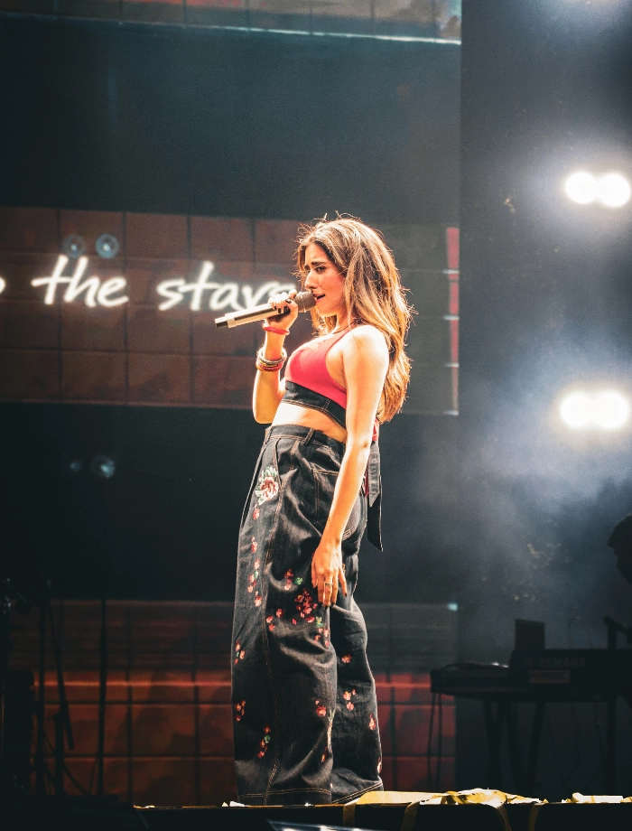
Event photography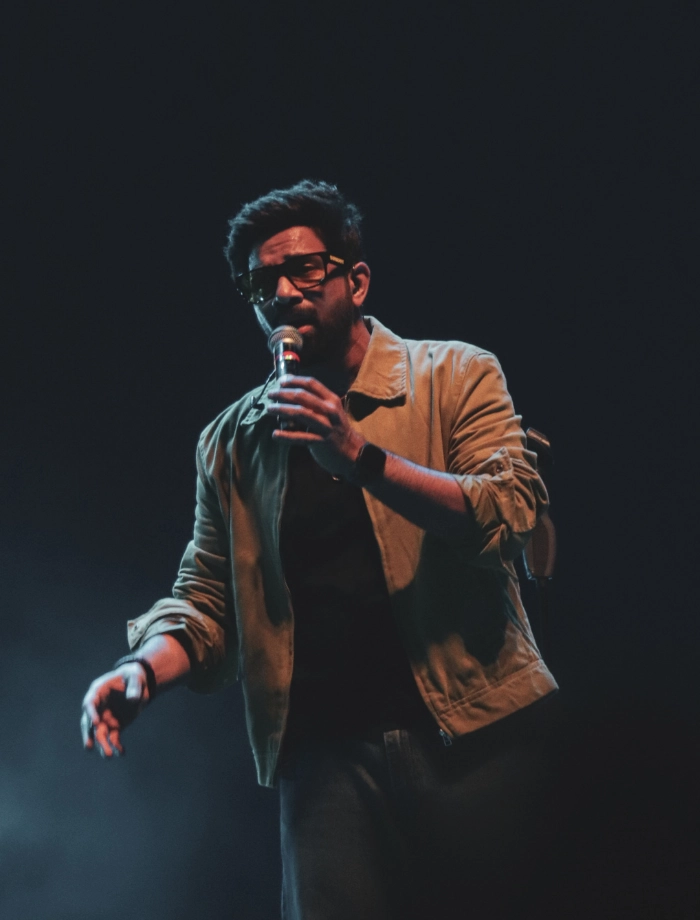
Event photography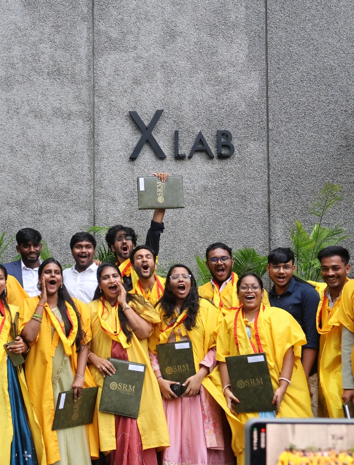
Campus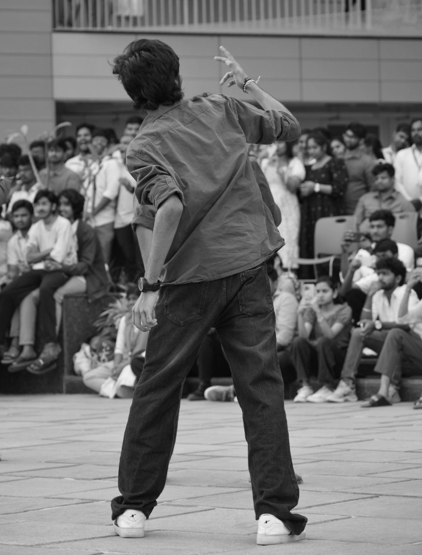
Portraits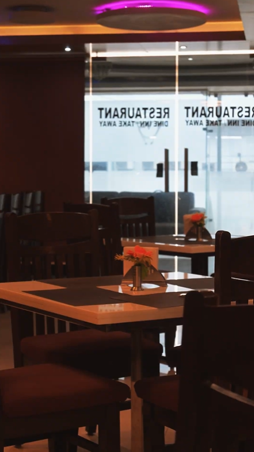
Brand contentShort-form promotional content designed to bring a place to life.
Watch reel ↗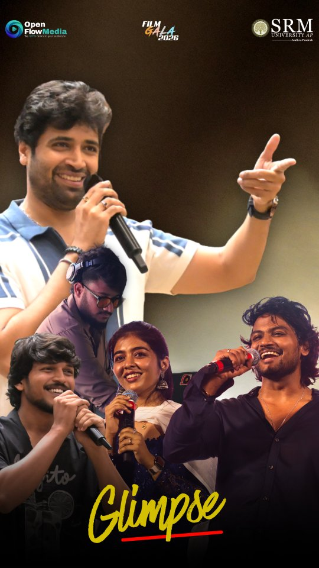
Festival film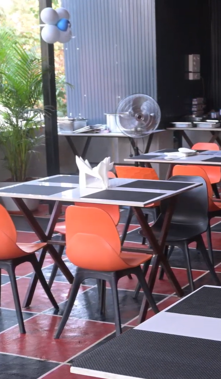
Promotional video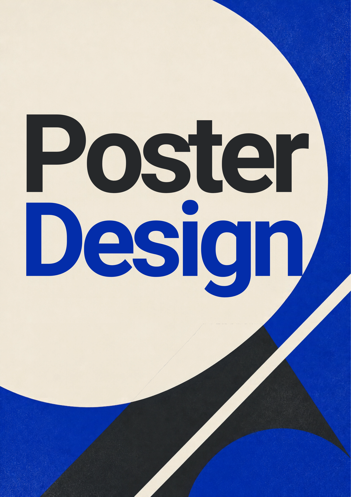
Graphic designPromotional posters and visual assets for events and campaigns.
Browse designs ↗Behind the frame
I enjoy being involved in the full creative process — planning a shot, handling the camera, working with movement, and shaping the final edit. I’ve worked on campus events, portraits, promotional videos and graphic content.
Mirrorless camera operation, framing and composition.
Setup, balancing and stabilized camera movement.
Photography and video in live environments.
Creative planning and social-first content.
Have a project in mind?
Available for creative projects, event coverage and collaborations.